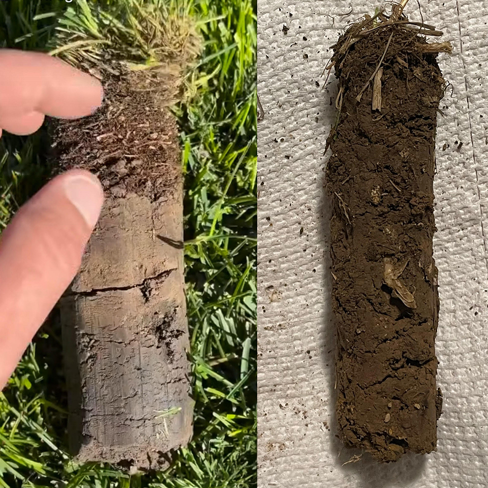

I Know Your Lawn
I personally visit every new property before we start. I assess your grass type, check your irrigation, identify any pest or disease issues, and design a care plan specific to your yard. Then I assign your dedicated crew — the same 2–3 people who'll take care of your lawn every single week. They know your property because I trained them on it.